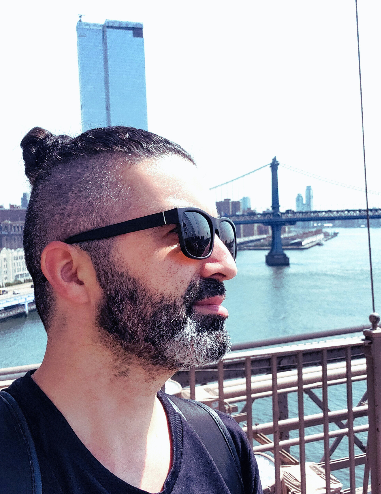

Srulik Shriki
BA in Journalism & Graphic Communication, Eastern Michigan University
Hi, I am a multimedia artist and writer opemn for work suggestions.
I have been pursuing knowledge in graphic design and communication over the last three years. Ever since I can remember, art has been in my spirit.
I utilize various media tools in my projects, including Adobe Photoshop, Illustrator, InDesign, Lightroom Classic, and Canva. I enjoy using my camera to capture beautiful natural views.
I graduated with my bachelor’s degree in journalism & graphic communication in the fall of 2025. In my major, I gained writing skills and experience with various writing styles and research techniques.
During the summer of 2025, I interned at The Echo newspaper of Eastern Michigan University. I produced more than 20 stories, generated ideas, conducted background research, interviewed, photographed, and worked in a news system.
Additionally, I love helping people, and with my graphic communication and writing skills, I strive to incorporate user experience into my designs.
I took Google’s user experience courses through Volunteer Community College and created prototypes and storyboards for real situations of user experience.
Additionally, I participated in the Digital Summer Clinic in Ann Arbor SPARK partnered with EdTech startup, working directly with an emerging EdTech startup founder, I developed digital marketing efforts—designing over 150 visual assets, managing content schedules, and publishing 120+ posts to build initial brand presence under tight deadlines.